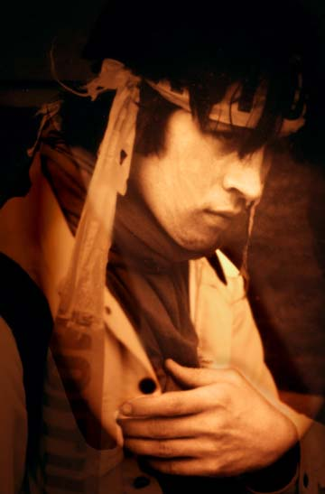

Tantra
photographic art
Tantra
photographic art
Tantra lives in Olympia, Washington, with her dog Sushi. A native of Indiana, she attended the Iowa Writers Workshop and has published poetry (and photography) in a number of magazines. Her art is a rebellion. She says of her photography, "I like to go beyond even the idea of what reality is..." She uses Photoshop and images culled from photographs (taken with an old Minolta), video, scanned objects, paper and paint. She writes, "I feel it is imperative for people to study history untainted with propaganda, to look beyond the facade that is eating us from the outside in and the inside out...and that is what you see in my art." Many of her photographs include self-portraits, variously manipulated.Outlaw Voice
